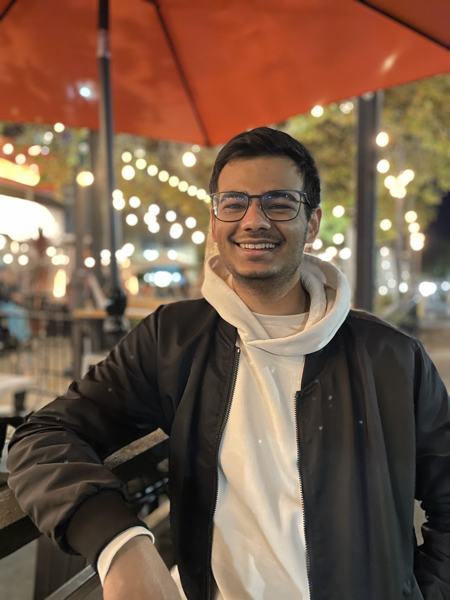

An HCI grad student who brings a scientist's rigor to human-centered design.
My path started in biology, where good work meant anticipating variables and planning for what could go wrong. That way of thinking is what pulled me toward human-computer interaction. I wanted to shape not just how systems function, but how people actually experience and trust them. I bring the same scrutiny to UX, building for reliability and inclusive design rather than surface-level trends.

In science, an experiment is only as good as its fail-safes. I bring that same obsession with edge cases to my design process.
New cities, parks, and museums, where I quietly collect inspiration the world hands me.
A good strategy game or a knotty puzzle and I happily lose track of time.
Winding down with a book, a film, or an album I can sink into.